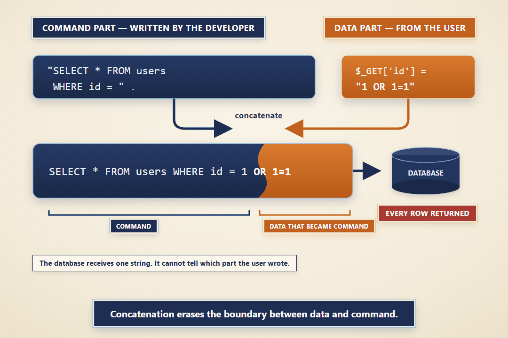

What you are doing, and why
An incident came in against the sign-in form, and you are the person who answers it. The assignment has two parts. First you write the report on the TechCorp incident form: what happened, how, and what you did about it. Then you make the report true by fixing the code in your own course environment and proving the fix holds.
It practices this module's one fix, a prepared statement with bound values, at three sinks: the sign-in query and the two customer lookups. Plan about two hours, roughly half the fix and half the writing.
The incident: TC-IR-003
Here is the ticket the desk filed, and the analyst's determination on top of it.
You will read the worked report from the pre-term breach (TC-IR-001, on the TC-IR-01 Form and Worked Example page in the Course Orientation module) as your model. Every report you write is held to its standard.
Your lab
Your work happens in your own course environment. If it is not open, launch it from the Launch Course Environment page in Module 01. It is your copy and the only target you are authorized to test. The pages in question are auth.php, which runs the sign-in query, and customer.php, which runs the name search and the account-id lookup. Both build SQL from what the user typed.
For section 5, this figure is the shape you are tracing. Reproduce it in your own words for your environment.

Open full-size image (opens in a new tab)Figure 1. String concatenation lets a typed value cross from the data part of a query into the command part, where the database parser reads it as SQL instead of a value.
Part 1 - The incident report
Download the incident-report starter (m04-tc-ir-003-starter.md). Save it as your working report if you prefer downloading instead of copying from the repository.
Start with assignments/incident-reports/m04-tc-ir-003-starter.md in your cloned course repository. Copy it to reports/m04-tc-ir-003.md, then complete it using the requirements below. The starter supplies the case background and prompts; your evidence, analysis, and verification are yours to add.
Use the supplied incident-report starter and complete these sections for TC-IR-003. Keep each section to what this incident needs; the worked TC-IR-001 shows the length and tone.
| Section | What it must say |
|---|---|
| 2. Executive summary | Two or three sentences a manager could read: what was exposed, to whom, and whether it is fixed. No code. |
| 3. Systems and data affected | The auth.php sign-in query and the users table, and the customer.php name search and account-id lookup. Name the values involved: the typed username, and the accounts and customer records the injection exposes, tax IDs included. |
| 4. Timeline of events | When the bypass was reported and when you acted, in relative terms. |
| 5. Detection and analysis | Trace the typed value from each form into its query. Name the source, the trust boundary, the sink, and the interpreter. There are three injectable queries; account for all three. |
| 6. Response actions | The fix you applied: bound parameters for the sign-in query and both customer lookups, so user input is always data and never SQL. |
| 7. Confirmation of remediation, annotated | Your before and after evidence from Part 2, with an annotation on each check saying what it proves and what it does not. |
| 9. Post-incident actions | The OWASP guidance you followed, by name, and one change that would stop this class of bug recurring on other pages. |
Part 2 - The hands-on fix
Do this in your course environment, on auth.php and customer.php. Each step produces evidence that goes into the report.
- Reproduce the bypass. On the sign-in form, type
' OR 1=1 --in the username box and any text in the password box, then sign in.- You are signed in as an administrator and land on the customer list, with the Admin link now in the navigation.
- Capture the screen. This is your first piece of before evidence for section 7.
- Reproduce the two customer lookups. The name search and the id lookup build SQL the same way.
- Search the customer list for
O'Brien. The apostrophe breaks the query and returns a database error, which proves the term reaches the SQL as syntax. - Then open
customer.php?id=0 OR 1=1. No customer has id0, yet an account opens, tax ID and all. - Capture both. This is the rest of your before evidence.
- Search the customer list for
- Trace the flow. Find the exact line where data became syntax in each query.
- In
auth.php, the line that pastes the username into the login string, and the call that hands it to the database. - In
customer.php, theLIKE '%$q%'name search and theWHERE id = $idlookup. - For each, name the source, the trust boundary, the sink, and the interpreter.
- In
- Parameterize the sign-in query. Replace the concatenated login query with a prepared statement.
- Put a placeholder where the username belongs, prepare the statement, and execute it with the username bound as a value.
' OR 1=1 --is now looked up as a literal account name, matches nothing, and signs no one in.- Do not strip characters; a real username with an apostrophe must still work. How the password is stored is out of scope for this module.
- Parameterize both customer lookups. Do the same in
customer.php.- For the name search, write
LIKE ?and bind the finished pattern'%' . $term . '%', so the wildcards live in the value, not the SQL text. - For the id lookup, bind the id to a placeholder. Validating it as an integer first is a fair supporting control, but the binding is the fix.
- A fix that deletes the apostrophe returns nothing for
O'Brien; that removes the evidence, not the flaw.
- For the name search, write
- Prove it. Capture, side by side with your before evidence:
- the
' OR 1=1 --username now failing to sign in, and a real account still signing in; - the name search no longer returning records you did not search for, and
O'Brienreturning his account with no error; customer.php?id=0 OR 1=1now returning nothing, and a real id still opening its account.- A fix that blocks a real sign-in, or breaks
O'Brien, or breaks a normal lookup, is a regression, not a fix.
- the
All three queries are parameterized when you finish, and the incident is closed. Nothing about TC-IR-003 is left open on auth.php or customer.php.
Open notes and open book are both fine. Respond in your own words; do not copy from other sources.
AI use on this assignment. The syllabus policy governs; these are its terms for an incident report and fix.
You must be able to explain every line you submit, on request. Undisclosed AI use is handled as academic dishonesty under the syllabus.
Expected output
Your captures will differ in cosmetic detail; the behavior must not. The assignment passes when the report is complete and the fix holds:
- The
' OR 1=1 --username no longer signs anyone in; it is looked up as a name that matches no account. - A real account still signs in normally.
- The name search no longer returns records that were not searched for, and
O'Brienreturns his account with no error. customer.php?id=0 OR 1=1returns nothing, while a real id still opens its account.- Section 5 names the source, the trust boundary, the sink, and the interpreter for all three queries; section 7 shows the before and after for each.
What to submit
Submit your completed TC-IR-01 report as a Markdown (.md) file, written as the Writing in Markdown page in the Course Orientation module shows. Put text evidence in fenced blocks at section 7. Where a piece of evidence is a screenshot, upload the image files with the report. Cite the OWASP SQL Injection Prevention and Query Parameterization cheat sheets, and the OWASP Proactive Controls 2024 C3, Validate all Input and Handle Exceptions, which calls for prepared statements, where you relied on them.
At the top of the report, include this block, completed:
NAME: First Last
AI DISCLOSURE: What you asked an AI and what you used, or "None."
REFLECTION: Two or three sentences: what you fixed, what was
difficult, and what you learned.Grading rubric
Read the Assignment rubric before submitting. The rubric assesses this activity separately from the other work in the module.